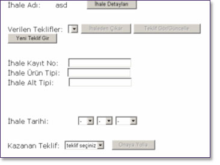
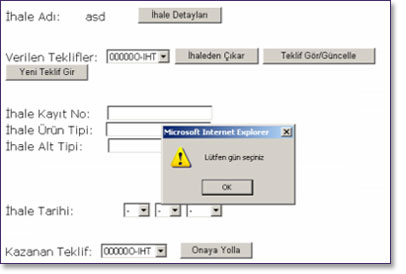

Kullanýcý bu sayfada seçilmiþ ihalenin detaylarýný görebilmek için “Ýhale Detaylarý” düðmesini týklayabilir. Eðer verilen teklifleri incelemek isterse “Teklif Görüntüleme”, veya bu tekliflerden birini çýkarmak isterse, bu teklifi seçip “Ýhaleden Çýkar” düðmesini týklayabilir. Bunlarla birlikte, “Yeni Teklif Gir” düðmesini týklayarak ulaþacaðý sayfada da yeni bir teklif giriþi yapabilir. Ayrýca kullanýcý bu sayfada “Ýhale Kayýt No”, “Ýhale Ürün Tipi” ve “Ýhale Alt Tipi” kutucuklarýný doldurup “Ýhale Tarihi” bilgisini de girer ve kazanan teklifi de “Kazanan Teklif” kutusundan seçerek onaya yollar. Onaya yollama tüm kutucuklarýn eksiksiz doldurulmasý halinde “Onaya Yolla” düðmesi týklanarak yapýlýr. Kullanýcý bunlardan herhangi birini eksik girmesi halinde sistem tarafýndan uyarýlýr.

